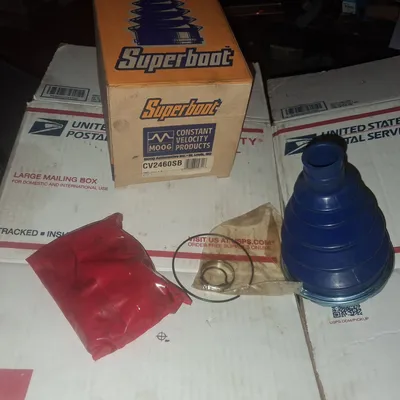
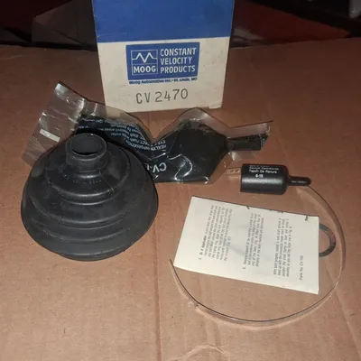
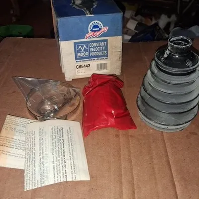
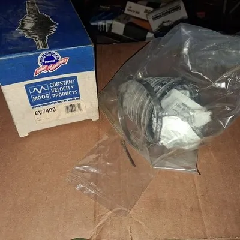

CV Joints, Boots & Parts
1985-1996 MOOG CV5405 Inner CV Boot Kit 4WD Chevy S10 Blazer GMC Sonoma Jimmy
CV5405
Fits 1985-1994 Chevrolet S10 Blazer · 1985-1996 GMC Jimmy (536 listed)
$17.99
View details19 parts from Moog, mostly transmission & drivetrain and suspension & steering. Each listing shows the part number, condition and photos. Check fitment on the part page before you order.
19 parts
Online checkout through Square. Ships from Carbondale, PA, or pick up by confirmed appointment only. Fitment question? Message us.
CV5405
Fits 1985-1994 Chevrolet S10 Blazer · 1985-1996 GMC Jimmy (536 listed)
$17.99
View details
CV5439
Fits 1985-1999 Buick Century · 1985-1990 Buick Electra (456 listed)
$21.99
View details
CV-2482
Interchange CV2482
$24.99
View details
CV2457
Fits 1979-1985 Buick Riviera · 1979-1985 Cadillac Eldorado (173 listed)
$29.99
View details
CV2460
Fits 1982-1984 Chevrolet Cavalier · 1982-1984 Chevrolet Celebrity (50 listed)
$19.99
View details
CV2460SB
Fits 1984-1986 Chevrolet Celebrity
$24.99
View details
CV2470
Fits 1974-1981 Volkswagen Dasher · 1987-1993 Volkswagen Fox (405 listed)
$19.99
View details
CV4405
Fits 1986-1996 Acura Integra · 1986-1989 Honda Accord (98 listed)
$19.99
View details
CV5443
Fits 1985 Buick Riviera · 1985 Cadillac Eldorado (14 listed)
$31.99
View details
CV5450
Fits 1985-1990 Chevrolet Celebrity · 1985-2002 Chevrolet Cavalier (244 listed)
$24.99
View details
CV5463
Fits 1985-2005 Buick Century · 2005-2007 Buick Allure (2793 listed)
$24.99
View details
CV5865
Fits 1985-1988 Chevrolet Spectrum · 1989 Geo Spectrum (54 listed)
$29.99
View details
CV6450
Fits 1983-1987 Renault Alliance · 1984-1986 Renault Encore (134 listed)
$19.99
View details
CV7400
Fits 1991-1994 Dodge Caravan (57 listed)
$21.99
View details
CV7406
Fits 1987-1995 Dodge Caravan · 1987-1995 Plymouth Voyager (601 listed)
$17.99
View details
CV7451
Fits 1993-1994 Ford Taurus · 1993-1994 Ford Tempo (60 listed)
$24.99
View details
CV8415
Fits 1989-1992 Ford Probe · 1988-1992 Mazda 626 (41 listed)
$19.99
View details
CV8448
Fits 1986-1994 Ford Taurus · 1986-1994 Mercury Sable (278 listed)
$22.99
View details
K90628
Fits 1998-1999 Mazda 626 (8 listed)
$19.99
View details